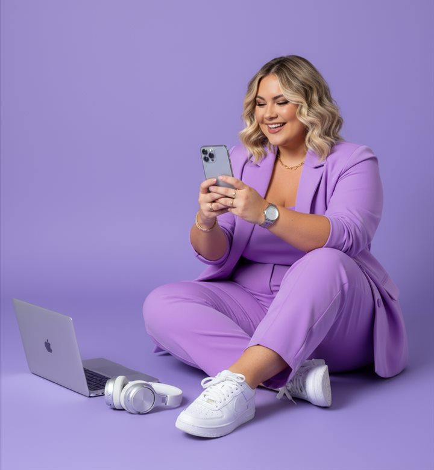

01
Boas-vindas

leia com calma:
Se você chegou até aqui, provavelmente já ouviu falar sobre UGC, criação de conteúdo ou oportunidades de trabalhar com marcas pela internet.
Criação de vídeos para apps e ferramentas digitais

Luana · UGC Tech CreatorDo primeiro cadastro às campanhas internacionais
Um guia prático para mulheres brasileiras que desejam criar conteúdo para aplicativos, plataformas e ferramentas digitais — mesmo começando do zero e sem falar inglês.
do primeiro
cadastro
às campanhas internacionais
Parte 1 – Entendendo o UGC Tech
Parte 2 – Preparação e gravação
Parte 3 – Roteiros, ferramentas e presença online
Parte 4 – Plataformas e candidaturas
Parte 5 – Remuneração, briefings e contratos
Parte 6 – Crescimento
leia com calma:
Se você chegou até aqui, provavelmente já ouviu falar sobre UGC, criação de conteúdo ou oportunidades de trabalhar com marcas pela internet.
Talvez tenha visto alguém gravando vídeos para aplicativos, mostrando como utiliza uma ferramenta digital ou recebendo oportunidades de empresas de outros países. E talvez tenha pensado: será que eu também consigo?
A resposta é que você pode aprender e começar a construir seu espaço nesse mercado. Não precisa ter milhares de seguidores, equipamentos caros ou experiência profissional para dar os primeiros passos.
O UGC Tech é uma área que permite trabalhar com a criação de conteúdos para empresas que desenvolvem aplicativos, plataformas, softwares e ferramentas digitais.
Neste guia, você vai aprender como funciona esse mercado, como preparar seus primeiros vídeos, como montar um portfólio, onde procurar campanhas e como se candidatar a oportunidades nacionais e internacionais.
Também vamos falar sobre remuneração, formatos de vídeos, contratos e direitos de uso, porque conhecer esses detalhes é tão importante quanto saber gravar.
Uma observação importante:
trabalhar com UGC não significa receber dinheiro automaticamente. As oportunidades dependem das campanhas disponíveis, da seleção das empresas, da qualidade das entregas e das condições de cada contrato. Este material foi criado para ajudar você a se preparar e tomar decisões mais conscientes.
UGC é a sigla para User Generated Content, expressão em inglês que significa conteúdo gerado por usuários.
No mercado de criação de conteúdo, UGC é um formato em que uma pessoa produz vídeos, fotos ou outros materiais que as empresas podem utilizar para apresentar seus produtos e serviços.
Quando falamos em UGC Tech, estamos falando de conteúdo voltado para o universo da tecnologia e dos produtos digitais.
Imagine que uma empresa desenvolveu um aplicativo para ajudar pessoas a aprender outro idioma.
Ela pode contratar uma criadora UGC para gravar um vídeo mostrando como o aplicativo funciona, apresentar uma funcionalidade, contar sua experiência ou demonstrar como a ferramenta pode ser utilizada no dia a dia.
Esse conteúdo poderá ser utilizado pela empresa em suas redes sociais, campanhas de divulgação ou anúncios, conforme o que foi acordado.
É isso que torna o UGC Tech uma oportunidade interessante para quem gosta de tecnologia, aplicativos e comunicação.
As empresas precisam apresentar seus produtos de maneira clara e interessante. No caso de aplicativos e ferramentas digitais, muitas vezes é necessário mostrar a experiência de uso, explicar funcionalidades e demonstrar como determinada solução pode ajudar uma pessoa.
Ela pode ser contratada para:
Uma empresa desenvolve um aplicativo de inteligência artificial para organização de tarefas.
A marca pode solicitar um vídeo mostrando:
Uma situação em que a pessoa está com muitas tarefas.
A apresentação do aplicativo.
A demonstração de como a ferramenta funciona.
O resultado ou benefício percebido.
Uma chamada para conhecer o aplicativo.
A criadora não precisa desenvolver o aplicativo. Seu trabalho é produzir o conteúdo solicitado, respeitando o briefing e as regras da campanha.
Envolve a criação de conteúdo para produtos e serviços de diferentes segmentos, como beleza, moda, alimentação, decoração e cuidados pessoais.
É voltado para aplicativos, plataformas, softwares e ferramentas digitais. O conteúdo costuma envolver gravações de tela, demonstrações, tutoriais e apresentações de funcionalidades.
O influenciador geralmente é contratado também pelo alcance e pela audiência que construiu em seus próprios canais. A divulgação acontece para os seguidores do perfil.
Uma diferença importante:
uma criadora UGC pode produzir conteúdo para uma marca sem precisar ter uma audiência grande. Isso não significa que seguidores nunca sejam considerados. Algumas campanhas exigem publicação no perfil da criadora ou estabelecem critérios específicos de alcance.
O que importa é entender exatamente o que a empresa está contratando.